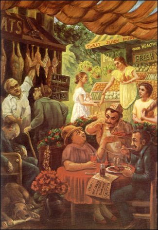

|

|
Chapter Seventeen, Text 8-10 'Foods dear to those in the mode of goodness increase the duration of life, purify one's existence and give strength, health, happiness and satisfaction. Such foods are juicy, fatty, wholesome, and pleasing to the heart. 'Foods that are too bitter, too sour, salty, hot, pungent, dry and burning are dear to those in the mode of passion. Such foods cause distress, misery and disease. 'Foods prepared more than three hours before being eaten, food that is
tasteless, decomposed and putrid, and food consisting of remnants and
untouchable things is dear to those in the mode of darkness.' |
|
| © 2002-2004 ISKCON |